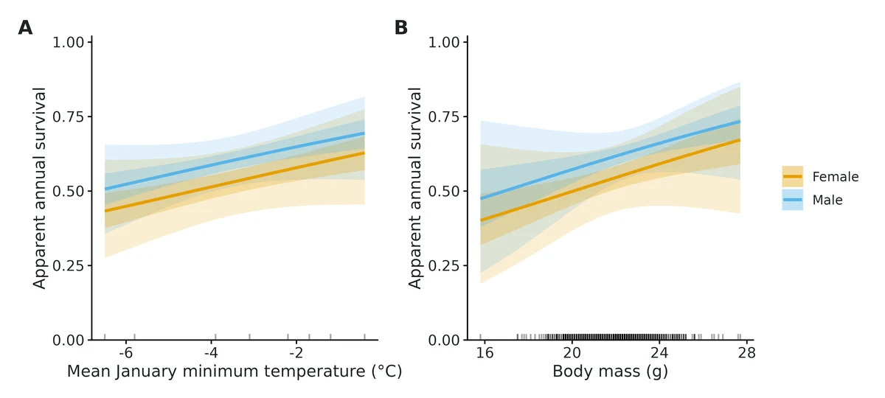
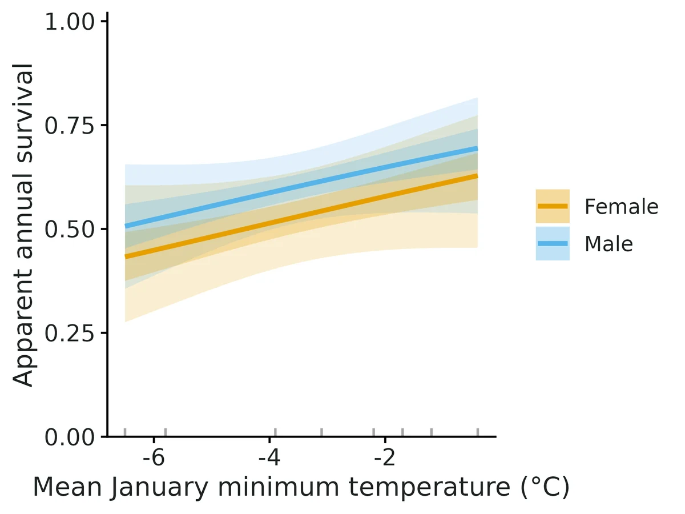
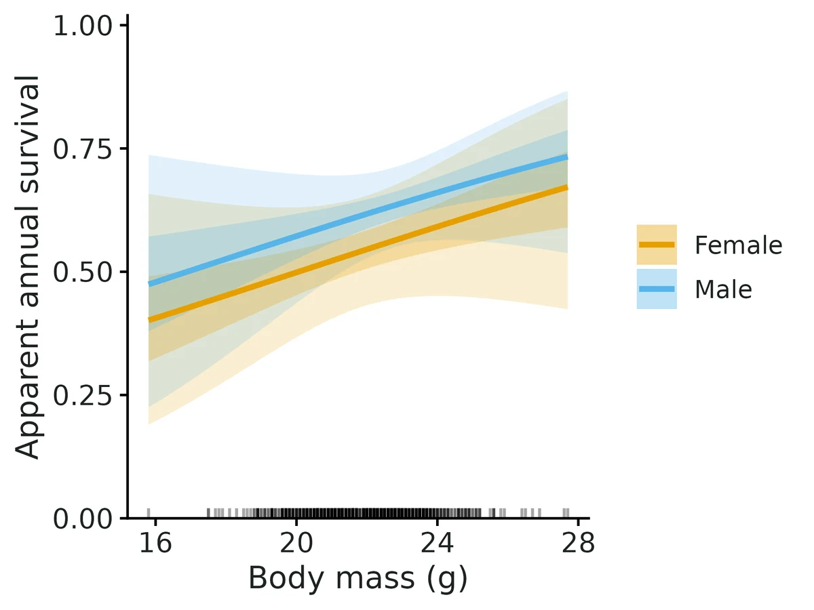
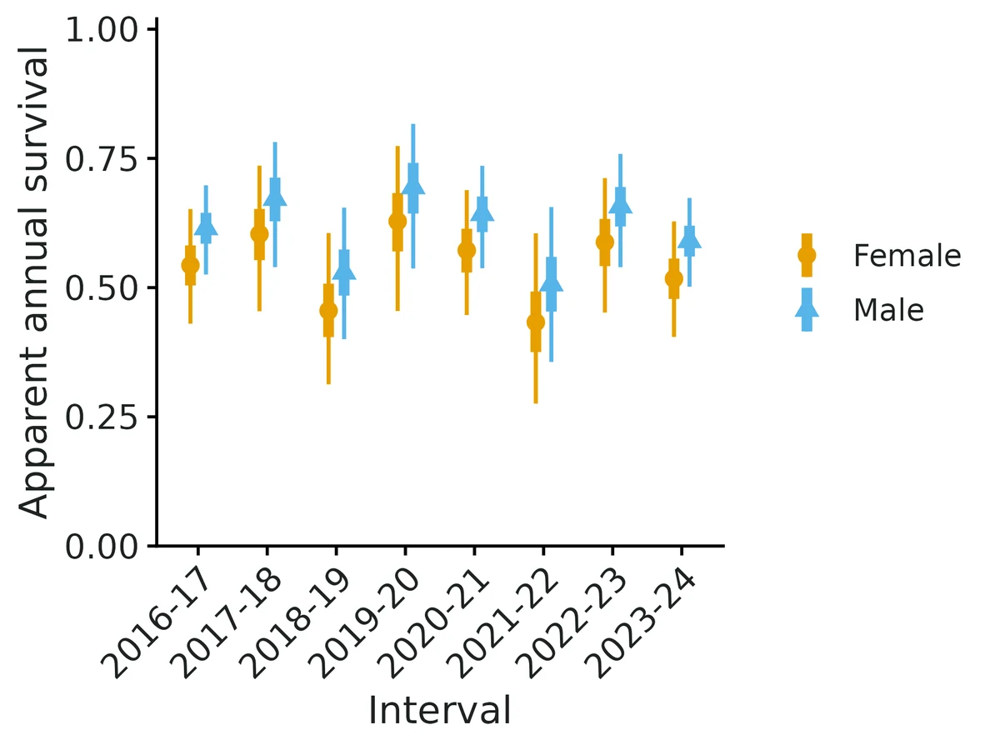

Cormack-Jolly-Seber apparent survival
"What proportion of my marked animals survive from one year (season, month) to the next, does that differ between males and females or juveniles and adults, and is it associated with body condition or winter weather?" The model separates survival from imperfect recapture: an animal not seen this year may be alive but missed. It conditions on first capture, so it estimates survival and recapture probability, not population size.
Is this the right analysis?
Use it when
Individually marked animals (bands, PIT tags, photo-ID, genetic tags) recaptured or resighted on repeated occasions; the question is how many survive from one occasion to the next and whether survival differs by sex/age class or varies with individual traits, environmental conditions or time.
Not for
Abundance or recruitment (use jolly-seber / scr-open), unmarked counts (nmixture), dead recoveries (band-recovery models), movement between sites or states (multistate), known-fate telemetry (use a known-fate / survival-time model).
The data you need
Capture history per individual (wide 0/1 history, long table of id x occasion, or long table of id x capture date), optional individual table (group, age at marking, covariates) and occasion table (environmental covariates).
What the example's main data file looks like:
| band_number | capture_date | net | bander |
|---|---|---|---|
| 2841-22465 | 2016-05-10 | N03 | KL |
| 2841-80867 | 2016-05-10 | N07 | JT |
| 2841-42326 | 2016-05-11 | N02 | MR |
| 2841-59941 | 2016-05-11 | N07 | MR |
| 2841-95675 | 2016-05-12 | N01 | JT |
Not sure? Use the finder to compare modules.
The worked example
Adult song sparrow apparent survival from constant-effort banding (Cormack-Jolly-Seber, simulated data with known truth)
A constant-effort mist-netting station catches adult song sparrows (Melospiza melodia) each breeding season, May to August, from 2016 to 2024. Every new adult gets a numbered aluminium band. Banders record sex, body mass and wing chord at first capture. Many birds are caught once and never again. Some of them die. Others are passing migrants or floaters ("transients") that never settle at the site.
The question: What is annual apparent survival of adult song sparrows at a banding station, does it differ between sexes, and is it associated with winter cold and body mass, allowing for transient birds that never return?
The data are simulated, so the true answer is known and the analysis can be checked against it.
What the researcher typed
I have nine years of song sparrow banding data from my station (2016 to 2024) in three files: sosp_captures.csv (every capture, with band number and date), sosp_birds.csv (sex and body mass of each bird when first banded) and sosp_years.csv (mean January minimum temperature for each winter). I want annual adult survival, whether it differs between males and females, and whether it is related to winter cold and body mass. Many birds are only caught once; I think some are migrants passing through. Please analyse this and give me a report with figures I can use in a paper.
Run it yourself
Download the example data below and unzip it.
Open the unzipped folder in Claude Code (see Install).
Paste the prompt above. The agent checks the files, writes a plan, runs planted truth, fits the model and writes the report. You can compare your results with the ones below.
Contains sosp_captures.csv, sosp_birds.csv, sosp_years.csv, the settings file (config.yaml), a description of the data and a step-by-step walkthrough.
Study design details
| n occasions | 9 |
|---|---|
| years | 2016-2024 |
| n intervals | 8 |
| n birds | 575 |
| new birds per year | 66-78 (mean 72) in 2016-2023 |
| prop male | 0.52 |
| capture rows | 1283 |
| bird seasons | 813 |
| birds recaptured | 158 |
| occasion covariate | winter_min_temp_c (8 winters used) |
| individual covariate | mass_g |
| group | sex (F reference) |
| engine | marked (maximum likelihood) |
| phi formula | ~ tsm + sex + winter_min_temp_c + mass_g (fitted as ~ tsm * (sex + winter_min_temp_c + mass_g)) |
| p formula | ~ sex |
Results from the example data

What this means
- Apparent annual survival at average mean January minimum temperature and body mass of residents: Female 0.54 (95% CI 0.43-0.65); Male 0.62 (95% CI 0.53-0.70).
- Apparent survival is the probability of surviving AND staying in the study area; animals that emigrate permanently are indistinguishable from deaths, so true survival is at least this high.
- Sex: Male vs Female (apparent survival): odds ratio 1.34 (95% CI 0.76-2.40). The interval includes 1: the data do not show a clear difference.
- Mean January minimum temperature: each 1 SD (2.04 deg C) increase multiplies the odds of apparent survival by 1.30 (95% CI 0.91-1.87); female survival 0.45 at -6.0 deg C vs 0.61 at -1.0 deg C. The interval includes no effect. This is an association, not proof of a causal effect.
- Body mass: each 1 SD (1.66 g) increase multiplies the odds of apparent survival by 1.17 (95% CI 0.90-1.52); female survival 0.49 at 19.8 g vs 0.59 at 23.9 g. The interval includes no effect.
- Transients: an estimated 0.26 (95% CI 0.00-0.53) (Female); 0.32 (95% CI 0.11-0.48) (Male) of newly marked animals were transients.
- Detection (recapture) probability per occasion: Female 0.41 (95% CI 0.28-0.55); Male 0.57 (95% CI 0.47-0.65).
- Goodness of fit: overall c-hat = 0.92 (p = 0.624). Test 3.SR detected transients (p = 0.027): the fitted model accounts for them (tsm). Excluding that component, c-hat = 0.50 (p = 0.990). No evidence of remaining lack of fit.
More figures



Figures are the module's default publication figures, reduced for the web. The report also saves them as PDF and full-resolution PNG.
Planted truth at the example's design
Before trusting the example's results, the module was run on many simulated data sets with the same design and known true values. Each row is one quantity: did the method get it back? (What the thresholds are.)
Every quantity checked passed planted truth at this design.
| This example | 9 annual occasions, 575 birds (about 72 newly banded per year), 25% transients |
|---|---|
| Design the module was validated at | 8 annual occasions, 350 animals (50 newly marked per year), recapture probability 0.5 |
The example has more birds (575 against 350) and one more occasion than the validated default, and a similar recapture probability (0.45-0.57 against 0.5). Transients were validated separately: with 30% transients and the transient model fitted, all 8 estimands passed. At the default design every estimand passed, with survival bias within 1.2% and coverage 0.90-0.98. Problems appeared only at much smaller designs (120 animals, 5 occasions, recapture 0.25).
These calls sit close to the pass/fail line. With another 200 simulated data sets they could come out the other way, so read them as “about at the limit” rather than as a clear pass or fail. Where the allowance is set by the noise floor, a quantity with a small true value can pass with a larger percentage bias than a quantity that fails. PASS there means the bias could not be told apart from simulation noise, not that the quantity is estimated better.
- phi_beta_body_mass (✓ PASS): bias +9.7% against an allowance of ±11.6% (set by the simulation-noise floor (3 Monte Carlo SE)), so it used 84% of the allowance.
10 of 10 rows pass; 1 is borderline.
| Quantity | True value | Average estimate | Bias | Allowed bias | Coverage (needed) | Result |
|---|---|---|---|---|---|---|
| detection_female | 0.45 | 0.452 | +0.4% | ±10.0% | 0.94 (0.904) | ✓ PASS |
| detection_male | 0.574 | 0.575 | +0.1% | ±10.0% | 0.96 (0.904) | ✓ PASS |
| p_beta_sex_male | 0.5 | 0.503 | +0.5% | ±13.4%† | 0.96 (0.904) | ✓ PASS |
| phi_beta_body_mass | 0.25 | 0.274 | +9.7% | ±11.6%† | 0.96 (0.904) | ✓ PASS ≈ borderline |
| phi_beta_sex_male | 0.3 | 0.302 | +0.7% | ±19.0%† | 0.95 (0.904) | ✓ PASS |
| phi_beta_winter_severity | -0.4 | -0.405 | -1.2% | ±12.7%† | 0.95 (0.904) | ✓ PASS |
| proportion_transient_female | 0.25 | 0.228 | -8.7% | ±14.9%† | 0.96 (0.904) | ✓ PASS |
| proportion_transient_male | 0.25 | 0.248 | -0.8% | ±10.0% | 0.96 (0.904) | ✓ PASS |
| survival_female | 0.55 | 0.548 | -0.3% | ±10.0% | 0.94 (0.904) | ✓ PASS |
| survival_male | 0.623 | 0.621 | -0.2% | ±10.0% | 0.96 (0.904) | ✓ PASS |
Limits that matter
- Low power at this design: 17% for the sex effect on survival, 51-56% for the winter and body mass effects (200-replicate recovery); intervals that include zero are inconclusive, not evidence of no effect.
- Transients must be modelled: ignoring them biases survival about 13% low with coverage about 0.5 (validated negative control); 3.SR flagged transience here and tsm was fitted.
- proportion_transient is an unconstrained ratio; the female interval extends below 0 (-0.12) and is truncated to 0 in the report text.
- False-positive rate for individual covariates such as body mass is 7.5-8% at nominal 5% (Wald tests).
- The winter effect rests on 8 winters (one value per year) and is an association, not a causal effect.
- Not modelled: individual heterogeneity in recapture beyond sex, band loss, temporary emigration; apparent survival = true survival x site fidelity.
All known limits from the module's validation record
- Low-information designs, Bayesian engine. With about 5 occasions, about 120 animals and p of about 0.25, Nimble posterior means of survival (+11%) and of slopes (+40-76%) are biased (the gate FAILS on bias; coverage is still 0.90-0.96). marked passes at that design, but its effect estimates are uninformative (power below 10%). With few occasions or low p, prefer marked, and report intervals rather than point estimates.
- SD of random year effects (
(1 | time), Nimble): biased upward by about 14% (0.569 vs 0.5) with 11 intervals under the half-Normal(0, 1) prior. The gate FAILS on bias, while coverage is 0.94. Treat the temporal SD as weakly identified with fewer than about 15 intervals. The other parameters in that model recover well. - Transients must be modelled. If they are ignored, survival is about 13% too low and the gate fails (section 4). The module flags 3.SR. An additive
tsmattenuates covariate effects, so keep the defaulttsm_interact: true. - False-positive rate for individual covariates is 7.5-8% at nominal 5% (Wald, 350 animals).
- ML boundary fits. About 5% of replicates in the hard and phi(t)p(t) designs hit a boundary (a probability of 0 or 1). These fits are flagged as not converged and not interpreted.
- Not modelled: individual heterogeneity in p beyond covariates (no mixtures), tag loss, temporary emigration, losses on capture, and multistate movement. Apparent survival is always true survival x site fidelity.
proportion_transient= 1 - phi_first/phi_later is an unconstrained ratio (per unit time when intervals are unequal; not validated with tsm and unequal intervals). Its table interval can extend below 0 (no evidence of transients). The report text truncates it to 0-1 for display.- Random time effects are available only with
engine: nimble. Random effects on p are not implemented (p_temporal_sdis used only in simulation).
How this module was validated
- 200 simulated datasets per design for the default maximum-likelihood engine (marked) and 100 for Nimble (3 chains x 3,000 iterations, 1,000 burn-in). To pass, bias had to be within 10% (or 3 Monte Carlo SE) and coverage (how often the 95% interval contained the truth) at least about 0.90.
- Default design: all 6 estimands passed on all three engines (marked, Nimble marginal and Nimble latent). Variants also passed: time-dependent survival, age plus trap-happiness, and transients with the transient model fitted. The one failure was the random-year SD, which was +13.8% too high.
- Hard design (120 animals, 5 occasions, recapture 0.25): marked passed, but power to detect the effects was only 8-9%. Nimble failed 3 of 6 estimands (female survival +11.3%).
- Negative control: ignoring transients biased survival 12-14% low, with coverage 0.45-0.50. The gate failed, as it should.
- False-positive rate with no true effects: 0.03-0.08.
- Cross-checks on the classic dipper data: the module matched wiqid (checked against MARK), a hand-coded likelihood and marked (-2 log-likelihood 666.84), and the goodness-of-fit test reproduced the published value.
- Power: about 80-100 newly marked animals per year over 8 years are needed for 80% power on a +0.4 logit sex difference. A separate verifier agent with its own simulator (unequal intervals) got 8/8 on both engines and null rejection rates of 0.04-0.06, and both of its negative controls failed as they should.
Every run uses the acceptance gate described on the validation page. The full record follows, section by section, exactly as kept in the module's VALIDATION.md.
Settings and pass/fail rule used for every run
All recovery runs: bin/Rscript core/run.R recover cjs --config dev/cjs/cfg/<label>.yaml --nsim N --cores 16 --out results/cjs/recover_<label> on njobvu (SLURM via bin/ejob, 16 cores), module fast_settings (marked: ML via TMB; Nimble: 3 chains x 3,000 iterations, 1,000 burn-in, no GOF). Drivers: dev/cjs/run_marked.sh, dev/cjs/run_nimble.sh. Raw results: results/cjs/recover_<label>/ (summary CSV, per-replicate CSV, HTML report). The tables below come straight from the summary CSVs (dev/cjs/md_tables.R). The marked runs and the Nimble default run were repeated on 2026-10-20 with the final module code and reproduced the earlier numbers exactly (same seeds).
Gate (core/R/recovery.R::recovery_gate, thresholds NOT changed): |bias| <= max(10% of truth, 3 MC SE) (for truth = 0: max(0.1 x empirical SD, 3 MC SE)); 95% interval coverage >= 0.95 - 3 MC SE (floor 0.80); converged in >= 90% of ALL replicates. "Converged" means max R-hat < 1.05 for Nimble. For marked it means a finite Hessian, no probability estimate outside 0.001-0.999, and no logit coefficient with |estimate| or SE > 10 (boundary or non-identifiable fits are flagged).
Default design (module defaults): 8 annual occasions; 50 newly marked per occasion at occasions 1-7 (350 animals); half male; survival 0.60 for females at average covariates; male +0.4 logit; winter severity (occasion covariate) -0.5 per SD; body mass (individual covariate) +0.3 per SD; constant recapture p = 0.5. Fitted: phi ~ sex + winter_severity + body_mass, p ~ 1.
Timing (median per replicate): marked 0.5 s; Nimble marginal (dCJS_vv) 44 s; Nimble latent state 163 s; Nimble with (1 | time) at 12 occasions 292 s. The selftest (4 reps, marked) takes 3.3 s per replicate including GOF.
1. Recovery at the default design: PASS (all three engines)
marked (default engine), nsim 200: 200/200 converged, coverage bound 0.904
| estimand | truth | mean est | rel. bias | bias MC SE | RMSE | coverage | power | gate |
|---|---|---|---|---|---|---|---|---|
| detection | 0.500 | 0.500 | +0.1% | 0.0026 | 0.036 | 0.940 | PASS | |
| phi_beta_body_mass | 0.300 | 0.317 | +5.5% | 0.0076 | 0.109 | 0.960 | 0.89 | PASS |
| phi_beta_sex_male | 0.400 | 0.409 | +2.3% | 0.0138 | 0.195 | 0.955 | 0.56 | PASS |
| phi_beta_winter_severity | -0.500 | -0.516 | -3.3% | 0.0126 | 0.178 | 0.980 | 0.89 | PASS |
| survival_female | 0.600 | 0.599 | -0.2% | 0.0027 | 0.039 | 0.945 | PASS | |
| survival_male | 0.691 | 0.691 | +0.0% | 0.0025 | 0.035 | 0.930 | PASS |
Nimble marginal (nimbleEcology dCJS_vv), nsim 100: 100/100 R-hat < 1.05 (max 1.003), bound 0.885
| estimand | truth | mean est | rel. bias | bias MC SE | RMSE | coverage | power | gate |
|---|---|---|---|---|---|---|---|---|
| detection | 0.500 | 0.496 | -0.9% | 0.0036 | 0.037 | 0.930 | PASS | |
| phi_beta_body_mass | 0.300 | 0.322 | +7.4% | 0.0115 | 0.116 | 0.940 | 0.88 | PASS |
| phi_beta_sex_male | 0.400 | 0.437 | +9.3% | 0.0192 | 0.195 | 0.960 | 0.60 | PASS |
| phi_beta_winter_severity | -0.500 | -0.539 | -7.9% | 0.0201 | 0.204 | 0.980 | 0.90 | PASS |
| survival_female | 0.600 | 0.602 | +0.3% | 0.0038 | 0.038 | 0.950 | PASS | |
| survival_male | 0.691 | 0.699 | +1.1% | 0.0037 | 0.037 | 0.900 | PASS |
Nimble latent state (z sampled), nsim 100: 100/100 R-hat < 1.05 (max 1.016), bound 0.885
| estimand | truth | mean est | rel. bias | bias MC SE | RMSE | coverage | power | gate |
|---|---|---|---|---|---|---|---|---|
| detection | 0.500 | 0.495 | -1.0% | 0.0037 | 0.037 | 0.930 | PASS | |
| phi_beta_body_mass | 0.300 | 0.322 | +7.5% | 0.0114 | 0.116 | 0.940 | 0.88 | PASS |
| phi_beta_sex_male | 0.400 | 0.438 | +9.4% | 0.0193 | 0.195 | 0.960 | 0.60 | PASS |
| phi_beta_winter_severity | -0.500 | -0.540 | -8.1% | 0.0199 | 0.202 | 0.970 | 0.91 | PASS |
| survival_female | 0.600 | 0.602 | +0.3% | 0.0038 | 0.038 | 0.960 | PASS | |
| survival_male | 0.691 | 0.699 | +1.2% | 0.0037 | 0.037 | 0.910 | PASS |
The two Nimble formulations use the same seeds and give nearly identical estimates, which confirms that the marginal (forward algorithm) and latent-state likelihoods agree. The posterior-mean slopes are 7-9% further from zero than the ML estimates, the usual small-sample skew of logit-scale posteriors under N(0, 2) priors. This is within tolerance.
2. Model variants (marked unless stated): all PASS
| variant (config) | nsim | converged | result | |
|---|---|---|---|---|
Fully time-dependent phi(t) p(t) with random year variation in the truth (timedep) | 200 | 189/200 (94.5%) | 13/13 PASS: per-interval survival bias -3.3% to +4.3%, coverage 0.937-0.989; last phi x p product -0.1%, coverage 0.968 | |
same, Nimble (timedep_nimble) | 100 | 100/100 | 13/13 PASS: bias -1.6% to +5.3%, coverage 0.93-0.99 | |
40% juveniles (age_class), trap-happy recapture (td, +0.8 logit), sex effect on p (agetd) | 200 | 200/200 | 13/13 PASS: juvenile effect -1.033 (truth -1.0, coverage 0.945); td 0.787 (truth 0.8, coverage 0.95); survival in 4 sex x age classes within 1.2% | |
30% transients, tsm fitted (crossed with the other terms, the default) (transient_tsm) | 200 | 200/200 | 8/8 PASS: resident survival -0.9 / -0.7%; proportion transient 0.282 / 0.279 (truth 0.30, coverage 0.97 / 0.955); covariate effects within 4% | |
| Random year effects on survival `(1 | time), 12 occasions, Nimble (randomtime_nimble`) | 100 | 100/100 | 5/6: survival, detection and slopes PASS (within 2.2%); survival_temporal_sd FAILS on bias (0.569 vs 0.5, +13.8%, MC SE 0.020; coverage 0.94). See Known limits |
The 11 replicates of timedep that were not converged were boundary fits (some interval's survival or p estimated at 0 or 1), which the module flags as not converged.
3. Harder design: 5 occasions, 30 newly marked per occasion (120 animals), p = 0.25
marked (hard), nsim 200: 190/200 converged (95%), bound 0.903. All 6 PASS, but see note
| estimand | truth | mean est | rel. bias | bias MC SE | RMSE | coverage | power | gate |
|---|---|---|---|---|---|---|---|---|
| detection | 0.250 | 0.267 | +6.8% | 0.0053 | 0.075 | 0.911 | PASS | |
| phi_beta_body_mass | 0.300 | 0.423 | +40.9% | 0.0423 | 0.595 | 0.979 | 0.08 | PASS |
| phi_beta_sex_male | 0.400 | 0.477 | +19.2% | 0.0630 | 0.870 | 0.968 | 0.09 | PASS |
| phi_beta_winter_severity | -0.500 | -0.575 | -15.0% | 0.0744 | 1.026 | 0.979 | 0.08 | PASS |
| survival_female | 0.600 | 0.600 | +0.0% | 0.0116 | 0.160 | 0.953 | PASS | |
| survival_male | 0.691 | 0.694 | +0.4% | 0.0111 | 0.153 | 0.947 | PASS |
Survival and p are recovered without bias and with nominal coverage, but the intervals are wide (RMSE about 0.16). The covariate effects pass only because their MC SE is large. Power is 8-9%, the RMSE (0.6-1.0 logit) is larger than the effects, and the large relative bias comes from a few replicates with near-separation. At this design, survival can be estimated but effects on survival cannot be detected. The report says so through the wide intervals.
Nimble (hard_nimble), nsim 100: 100/100 R-hat < 1.05. 3/6 FAIL (bias)
| estimand | truth | mean est | rel. bias | bias MC SE | RMSE | coverage | power | gate |
|---|---|---|---|---|---|---|---|---|
| detection | 0.250 | 0.243 | -2.9% | 0.0065 | 0.066 | 0.920 | PASS | |
| phi_beta_body_mass | 0.300 | 0.511 | +70.2% | 0.0475 | 0.518 | 0.910 | 0.23 | FAIL (bias) |
| phi_beta_sex_male | 0.400 | 0.703 | +75.7% | 0.0889 | 0.935 | 0.910 | 0.14 | FAIL (bias) |
| phi_beta_winter_severity | -0.500 | -0.704 | -40.7% | 0.0704 | 0.730 | 0.960 | 0.21 | PASS |
| survival_female | 0.600 | 0.668 | +11.3% | 0.0125 | 0.141 | 0.940 | FAIL (bias) | |
| survival_male | 0.691 | 0.756 | +9.4% | 0.0134 | 0.148 | 0.900 | PASS |
With about 120 animals and p = 0.25, the posterior mean is pulled by the priors (Logistic(0,1) on the intercept, N(0, 2) on slopes) and by the skew of the posterior. Coverage stays at 0.90-0.96, so the credible intervals remain honest, but point estimates are biased. This is a documented limit (below). At such designs, use the marked engine, or report intervals rather than point estimates.
4. Negative control: 30% transients ignored. The gate FAILS, as it should
| estimand | truth | mean est | rel. bias | bias MC SE | RMSE | coverage | gate |
|---|---|---|---|---|---|---|---|
| detection | 0.500 | 0.444 | -11.2% | 0.0031 | 0.071 | 0.710 | FAIL |
| phi_beta_body_mass | 0.300 | 0.273 | -9.0% | 0.0082 | 0.119 | 0.925 | PASS |
| phi_beta_sex_male | 0.400 | 0.368 | -7.9% | 0.0165 | 0.234 | 0.920 | PASS |
| phi_beta_winter_severity | -0.500 | -0.409 | +18.3% | 0.0138 | 0.215 | 0.900 | FAIL |
| survival_female | 0.600 | 0.518 | -13.7% | 0.0035 | 0.096 | 0.500 | FAIL |
| survival_male | 0.691 | 0.608 | -12.1% | 0.0030 | 0.094 | 0.450 | FAIL |
When transients (animals that leave after marking) are not modelled, apparent survival is biased low by 12-14%, and the 95% intervals contain the truth only half of the time. So the recovery check catches this misspecification. In real data, R2ucare TEST 3.SR detects it: in the example data set, 3.SR p = 0.027 and the report recommends tsm. Fitting tsm (section 2) removes the bias.
A second, related failure: tsm fitted additively on the logit scale (transient_tsm_additive, tsm_interact: false). Survival passes (-0.8% / -2.8%), but covariate effects are attenuated by 16-25%. The body-mass, sex and winter effects and proportion_transient_male FAIL. Transients scale first-interval survival multiplicatively, so an additive logit term mixes them into the covariate slopes. For this reason the module crosses tsm with the other survival terms by default (MARK's phi(a2 x ...)), and that version passes (section 2).
5. False-positive rate with all survival effects = 0: PASS
| estimand | truth | mean est | bias | coverage | rejection rate (alpha 0.05) |
|---|---|---|---|---|---|
| phi_beta_body_mass | 0 | 0.001 | +0.001 | 0.920 | 0.080 |
| phi_beta_sex_male | 0 | -0.003 | -0.003 | 0.925 | 0.075 |
| phi_beta_winter_severity | 0 | 0.011 | +0.011 | 0.970 | 0.030 |
| survival_female / male | 0.6 | 0.597 / 0.596 | -0.5% / -0.6% | 0.935 / 0.960 |
The false-positive rates are 3-8% (MC SE about 1.5%). Individual-level effects are slightly above nominal (Wald test, 350 animals), and the winter effect (8 years) is conservative. Treat a lone individual-covariate effect with p just under 0.05 cautiously.
6. Cross-checks against independent implementations
European dipper (Lebreton et al. 1992; 294 birds, 7 occasions), read from a long CSV by the module's own reader. Its histories are identical to marked::dipper (all 294).
| model | quantity | module marked | hand-coded forward likelihood | wiqid::survCJS (checked against MARK by its author) | marked::crm direct | module Nimble (posterior mean) |
|---|---|---|---|---|---|---|
| phi(.) p(.) | survival | 0.5602 | (logit 0.2421) | 0.5602 | (logit 0.242) | 0.5615 |
| recapture | 0.9027 | (logit 2.2263) | 0.9026 | (logit 2.227) | 0.8957 | |
| -2 lnL | 666.84 | 666.838 | 666.838 | 666.838 | ||
| phi(flood) p(.) | survival, normal years | 0.6071 | 0.6071 | 0.6079 | ||
| survival, flood years (1982-83, 1983-84) | 0.4688 | 0.4688 | ||||
| recapture | 0.8998 | 0.8998 | 0.8924 | |||
| -2 lnL | 660.10 | 660.1028 | 660.1028 | |||
| phi(sex) p(.) | logit sex effect | 0.07929 | 0.07929 | (no individual covariates in wiqid) | 0.0804 |
R2ucare on the dipper females gives overall chi-square 10.276 on 12 df (p = 0.592). This is the value printed in the R2ucare vignette (Gimenez et al. 2018).
Simulated data, default design (seed 11). The module marked fit matches the hand-coded likelihood to 5 decimals for every coefficient and SE (e.g. sex 0.48591, SE 0.2084). Nimble marginal and latent agree with ML within 0.03 logit units and have posterior SDs within 3% of the ML SEs. The fit with unequal intervals (one occasion dropped, so a 2-year gap) agrees with the hand likelihood to 4 decimals (intercept 0.4647, sex 0.2765, mass 0.1550) and with Nimble within 0.006 logit units.
phi(t) p(t), simulated (seed 21). The module marked fit equals wiqid::survCJS for all six identifiable interval survivals (e.g. 0.7959, 0.7151, 0.6367) and recaptures (0.5277, 0.4983, ...). wiqid's confounded last pair gives phi7 x p7 = 0.8287 x 0.5501 = 0.4559, which equals the module's survival_x_detection_2021 = 0.4559. Nimble gives 0.4468.
7. Power
Power at alpha = 0.05 (default effects; 8 occasions, p = 0.5):
| newly marked per occasion (total animals) | body mass (+0.3/SD) | sex (+0.4) | winter severity (-0.5/SD) | survival coverage F / M |
|---|---|---|---|---|
| 10 (70) | 0.25 | 0.11 | 0.21 | 0.98 / 0.95 |
| 20 (140) | 0.51 | 0.22 | 0.43 | 0.97 / 0.95 |
| 40 (280) | 0.80 | 0.41 | 0.77 | 0.96 / 0.94 |
| 80 (560) | 0.99 | 0.78 | 0.98 | 0.94 / 0.94 |
| 160 (1120) | 1.00 | 0.96 | 1.00 | 0.95 / 0.97 |
Coverage holds at every sample size (0.90-0.99 for all estimands). To have 80% power for a male-female difference of +0.4 logit (about +9 percentage points of survival), plan for roughly 80-100 newly marked animals per year over 8 years at p = 0.5.
8. Example fits
config.yaml: song sparrow banding station, simulated with known truth (TRUTH.txt), dates format, transients, sex, winter temperature, body mass. Marked estimates: resident female survival 0.544 (truth 0.55); male logit effect 0.30 (0.3); winter 0.27 (0.4); mass 0.16 (0.25); proportion transient 0.26 / 0.32 (0.25); female p 0.41 (0.45); male p effect 0.63 (0.5). All truths are inside the 95% CIs. 3.SR flags transience (p = 0.027).config_nimble.yaml: same data, Bayesian, with(1 | time). Estimates are within 0.04 of marked, R-hat <= 1.001, bulk ESS >= 3,600.config_dipper.yaml: the real dipper data with phi(flood). The output matches section 6.
Independent verification (2026-10-20, separate verifier agent)
Literature / code check. Checked line by line against the CJS likelihood (Lebreton et al. 1992), the latent-state formulation (Kery & Schaub 2012 ch. 7: z[f]=1, z[t] ~ Bern(phi z[t-1]), y ~ Bern(p z)), the installed nimbleEcology::dCJS_vv source (forward algorithm, x[1] must be 1, probCapture[1] unused: the module's padding with y = 1, phi = 1, p = 1 before first capture adds log 1 = 0 and is correct), Pradel et al. 1997 (proportion transient = 1 - phi_first/phi_resident) and Pradel 1993 (td = caught at t-1). Priors: Logistic(0,1) intercepts (= U(0,1)), N(0, 2) slopes, half-N(0,1) on the random-year SD (non-centred). Unequal intervals enter as phi^dt in both engines. Simulator and fit share only cjs_scaling()/cjs_prepare() (used to define truth on the standardised scale), so the independent simulator below was written without any module code.
Independent planted truth (dev/cjs/verify/verify_sim.R, own simulator; logs logs/cjs_verify.log, logs/cjs_verify_nimble.log; results results/cjs/verify/). Design differs from the builder's: 10 occasions with unequal intervals (one 2-unit gap), 35 marked per occasion at 1-9 (315 animals), 45% male, group levels "F"/"M", survival 0.72 (F), male -0.5, wing length +0.4/SD (individual), rainfall -0.35/SD (occasion, gamma-distributed), p = 0.35 (F) with male +0.6. Fitted phi ~ sex + wing + rain, p ~ sex.
| run | nsim | converged | result |
|---|---|---|---|
| main, marked | 200 | 200/200 | 8/8 PASS: survival F -0.2% (cov 0.96), M -1.4% (0.945); p F -0.3%, M +1.8%; slopes: sex -6.7%, wing +1.0%, rain +5.0%, p sex +7.6%; coverage 0.93-0.98 |
| main, Nimble marginal | 100 | 100/100 (max R-hat 1.003) | 8/8 PASS: survival -0.5% / -0.5%; slopes -0.4% to +6.9%; coverage 0.93-0.99 |
| null (all effects 0), marked | 200 | 200/200 | 8/8 PASS; rejection rates 0.04 (p sex), 0.05 (rain), 0.06 (sex), 0.04 (wing) |
| 35% transients, tsm fitted, marked | 200 | 200/200 | 10/10 PASS: proportion transient 0.352 / 0.329 (truth 0.35, cov 0.965 / 0.955); resident survival +0.8% / -0.3% |
| negative control: 35% transients ignored | 200 | 200/200 | FAILS as it should: survival -10.7% / -14.4%, coverage 0.58 / 0.585; p -13 to -17%; rain effect +24% |
| negative control: unmodelled p heterogeneity (p 0.15 / 0.65 mixture) | 100 | 100/100 | FAILS: survival -8.7% / -10.1%, coverage 0.47 / 0.72 |
Builder's commands rerun (dev/cjs/verify/run_marked_verify.sh, results/cjs/verify/rerun_*): default, null and transient_ignored reproduced sections 1, 4 and 5 exactly (e.g. survival -0.2% / 0.0%, coverage 0.945 / 0.93; FPR 0.080 / 0.075 / 0.030; transients ignored -13.7% / -12.1%, coverage 0.50 / 0.45).
Usability. The three examples were refitted (dev/cjs/verify/run_examples_verify.sh); every interpretation sentence of the song sparrow report was recomputed from the fit (odds ratios, CIs, 10th/90th-percentile survival 0.45 / 0.61 and 0.49 / 0.59, interval range) and is correct; dipper flood survival 0.607 / 0.469 matches section 6. Figures checked by eye (conditional effects in original units with rug, per-interval survival, odds-ratio forest plot, GOF, captures, Nimble trace/posterior). Messy-data tests (dev/cjs/verify/messy_test.R): NA covariate, NA covariate year, missing year row, misspelled band id, duplicated id, bad date all gave clear messages already.
Changes made (backups dev/cjs/verify/*.preverify; fit code untouched, so no recovery result changes):
R/io.R: a renamed/missing individual-covariate, group or age column was silently dropped (check_data reported nothing and the fit failed later); nowread_datastops and lists the available columns. A group value not ingroup_levels(e.g. "f" vs "F") was silently turned into NA and reported as "missing"; now it names the bad value and the allowed levels. Missingdate_col/occasion_col/occasion_cov_colmessages list the available columns. Blank ids in the captures file are reported with row numbers.check_datanow checks that every formula variable exists (a misspelled covariate in the formula was not caught before fitting).R/report.R: when survival varies over time only through occasion covariates (notime,Timeor(1 | time)), the report said "Survival varied between intervals" and thesurvival_timecaption implied year-specific estimates. Both now say the values are predicted from the named covariate only (no separate year effect).
Additional limit noted. With tsm and an unequal first interval (dt != 1), the first-interval survival is modelled as (phi_first)^dt, so proportion_transient is per unit time, not per release; not validated (the transient runs above use equal intervals).
Verdict: VERIFIED_WITH_LIMITS. Passes at the default design and at an independent design with unequal intervals on both engines; controls fail as they should and the FPR is about 0.05; the documented limits (Bayesian bias at low-information designs, random-year SD bias) stand.
Engine, references and full details
Engine: marked (maximum likelihood, default) or nimble + nimbleEcology (Bayesian; marginal dCJS likelihood or latent alive-state formulation); R2ucare for goodness of fit.
References
- Cormack RM (1964) Biometrika 51:429-438. Jolly GM (1965) Biometrika 52:225-247. Seber GAF (1965) Biometrika 52:249-259.
- Lebreton J-D, Burnham KP, Clobert J, Anderson DR (1992) Modeling survival and testing biological hypotheses using marked animals. Ecological Monographs 62:67-118. doi:10.2307/2937171
- Pradel R (1993) Flexibility in survival analysis from recapture data: handling trap-dependence. In: Marked Individuals in the Study of Bird Population, Birkhauser, 29-37.
- Pradel R, Hines JE, Lebreton J-D, Nichols JD (1997) Capture-recapture survival models taking account of transients. Biometrics 53:60-72. doi:10.2307/2533097
- Pradel R, Gimenez O, Lebreton J-D (2005) Principles and interest of GOF tests for multistate capture-recapture models. Animal Biodiversity and Conservation 28:189-204.
- Gimenez O, Lebreton J-D, Choquet R, Pradel R (2018) R2ucare: An R package to perform goodness-of-fit tests for capture-recapture models. Methods in Ecology and Evolution 9:1749-1754. doi:10.1111/2041-210X.13014
- Choquet R, Lebreton J-D, Gimenez O, Reboulet A-M, Pradel R (2009) U-CARE: Utilities for performing goodness of fit tests and manipulating CApture-REcapture data. Ecography 32:1071-1074. doi:10.1111/j.1600-0587.2009.05968.x
- Meredith M (2024) wiqid: Quick and Dirty Estimates for Wildlife Populations, R package (survCJS; used only for the cross-check in VALIDATION.md).
- Laake JL, Johnson DS, Conn PB (2013) marked: an R package for maximum likelihood and MCMC analysis of capture-recapture data. Methods in Ecology and Evolution 4:885-890. doi:10.1111/2041-210X.12065
- Gimenez O et al. (2007) State-space modelling of data on marked individuals. Ecological Modelling 206:431-438. doi:10.1016/j.ecolmodel.2007.03.040
- Kery M, Schaub M (2012) Bayesian Population Analysis using WinBUGS, ch. 7. Academic Press.
- Schaub M, Kery M (2022) Integrated Population Models, ch. 3. Academic Press.
- Turek D, de Valpine P, Paciorek CJ (2016) Efficient MCMC sampling for hierarchical hidden Markov models. Environmental and Ecological Statistics 23:549-564. doi:10.1007/s10651-016-0353-z
- Goldstein BR, Turek D, Ponisio L, de Valpine P (2024) nimbleEcology R package v0.5.0.
- de Valpine P et al. (2017) NIMBLE. Journal of Computational and Graphical Statistics 26:403-413. doi:10.1080/10618600.2016.1172487
- Burnham KP, Anderson DR (2002) Model Selection and Multimodel Inference, 2nd ed. Springer.